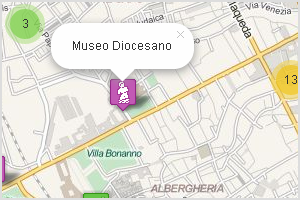

Strumenti utilizzati
Per elaborare i dati pubblicati dal comune e pubblicarli in questo sito sono stati usati soltanto software e librerie Open Souce. A seguire i principali.
-

OpenRefine
E' stato lo strumento principe: con questo ho pulito e omogeneizzato i dati ed estrattto nuovi attributi (come la posizione nello spazio).
Homepage » -

GDAL
Ho utilizzato questa libreria per convertire il file
Homepage ».csv- contentente la longitudine e la latitudine dei luoghi - in formatogeojson. -

Leaflet
Una libreria JavaScript per la pubblicazione di mappe interattive mobile friendly. Per la clusterizzazione ho usato il plugin markercluster.
Homepage » -
Twitter Bootstrap
Un framework JavaScript per lo sviluppo rapido, semplice e di qualità di front-end per il web. È stato per uniformare lo stile di queste pagine.
Homepage »